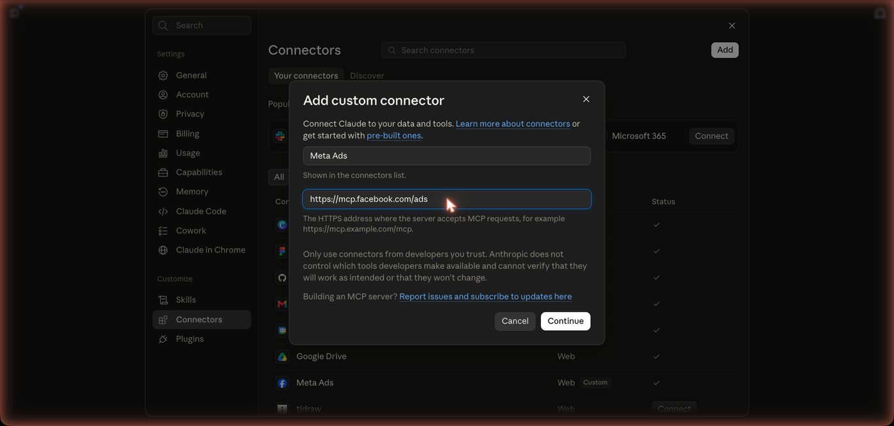
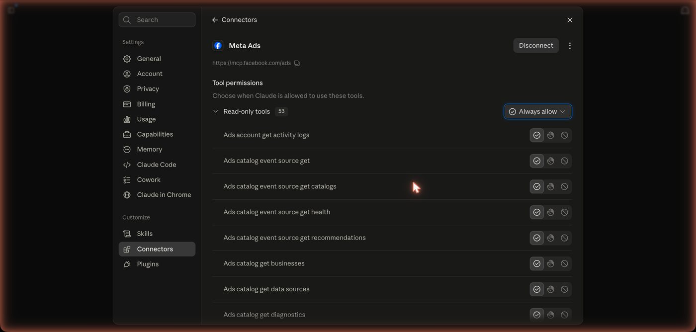
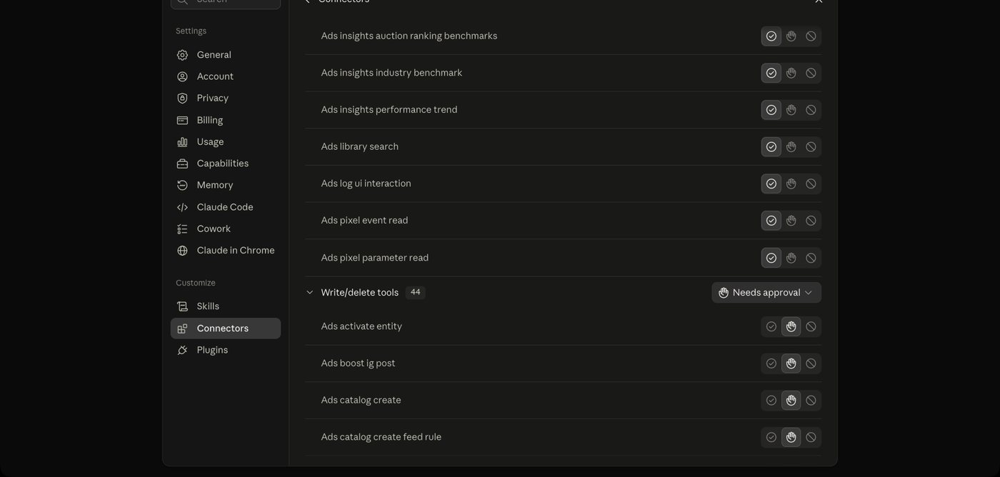
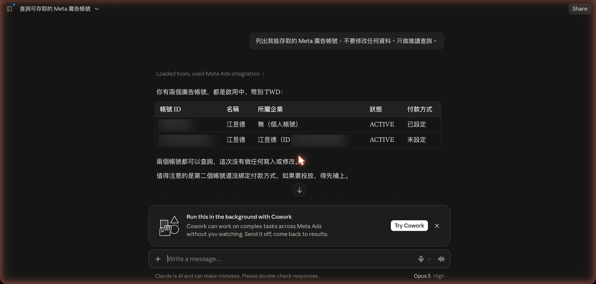
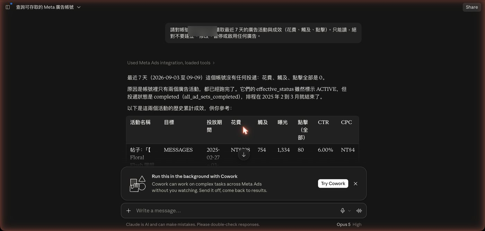

這篇在講什麼
Meta 今年開了官方端點，可以直接接上 Claude。我不會操作那些設定，這次也沒去學。我做的是寫一份交接單，把能動什麼、不能動什麼、誰來按授權寫清楚，然後把瀏覽器交給 AI。它自己開網頁、找入口、建連接器、啟動授權，停在需要我本人按的那一頁，我按完它接手驗收，讀出我的廣告帳號跟最近七天的成效。這篇記錄整段怎麼跑、它能碰到帳號的哪些東西、權限要在哪一端擋、我踩到什麼坑，以及交出去之後人手上還剩下什麼。
- 自己在投 Meta 廣告，一進後台就被那堆設定卡住的人
- 想讓 AI 幫忙看廣告數據，又怕它亂動帳號、亂花錢的人
- 幫客戶投廣告，想先搞清楚 AI 能碰到哪些東西再決定用不用的人
- 一份可以直接複製的交接單，把 AI 不准做的事寫死
- 接上之後的權限設法：哪些工具開一律允許、哪些維持每次詢問
- 一條分界線，判斷哪些事可以交給 AI、哪些必須自己盯
我不會設定 Meta 後台，這次也沒去學
我不會操作 Meta 廣告後台的設定。那些欄位我沒去研究過。
今天晚上我想試一件事：Meta 在今年開了官方的 MCP 端點，可以直接接到 Claude。據我所知，以前要讓程式讀 Meta 的廣告資料，得先去開發者後台建一個應用程式、拿一組叫做 token 的通行碼。這段是我對舊做法的印象，我沒有實際走過，因為我從來沒打算走。
我沒有去看文件。我打了一份交接單給 AI，把要做什麼、不准做什麼寫清楚，然後說：你自己去連。
它自己開了瀏覽器，找到設定入口，填好欄位，建立連接器，啟動 Facebook 授權，然後停下來等我。我按完授權，它接手驗收，讀出我的兩個廣告帳號，讀出最近七天的成效，還多講了一件我沒問的事。

整件事在同一次對話裡跑完。我碰到的只有 Facebook 那幾頁授權畫面。
這篇要講的是：這一段實際怎麼跑的、AI 為什麼停在那裡、它接上之後能碰到什麼、我踩到什麼坑，以及人在這個分工裡剩下什麼。
開始之前，你手上要有三樣東西
先把前提講清楚，免得你看到一半才發現做不了。
我用的是付費方案。如果你在設定裡找不到 Add custom connector 這顆按鈕，先確認你的方案有沒有這個功能。
個人的、企業的都可以。沒有廣告帳號就沒東西可讀。
我這次在同一次對話裡跑完。大部分時間是等 AI 操作跟等頁面載入，真正要你動手的只有授權那幾頁。
不需要的東西也講清楚：不需要 Meta 開發者帳號、不需要寫程式、不需要準備任何金鑰或密碼。
我給 AI 的是一份交接單
如果只看結果，這件事聽起來像「跟 AI 說一句話它就做完了」。實際上我給的是一份交接單，裡面寫了七件事：
| 欄位 | 我寫了什麼 |
|---|---|
| 目標 | 連上 Meta Ads 官方連接器，並完成唯讀驗證 |
| 可動範圍 | Claude 的連接器設定、Meta 官方授權頁 |
| 不可動邊界 | 不得建立、修改、暫停、啟用或刪除任何廣告；不得調整預算、受眾、素材或付款設定 |
| 不做的事 | 這輪只完成連接跟唯讀測試，不做廣告優化 |
| 允許路徑 | 只使用 Meta 官方端點，不裝任何第三方套件 |
| 誰來按 | OAuth 登入、選擇商業資產、最後授權確認，由我本人按 |
| 停損 | 同一條路失敗兩次就停，回報錯誤原文，不要換路硬闖 |
這份東西你可以直接拿去改。用法很簡單：把下面這段複製起來，改成你要接的服務，貼進 Claude 的對話框，按送出。
最後那條「回報格式」很重要。少了它，AI 很容易回你一句「完成」，你完全不知道它做到哪裡。
AI 自己走完的六個步驟
它實際做的事情，照順序是這樣：
- 先查 Claude 內建的連接器清單，確認裡面沒有 Meta Ads，所以只能走自訂連接器
- 想去操作 Claude 桌面版的設定，發現桌面版不在它能控制的應用清單裡，改走網頁版
- 開 claude.ai 的設定頁，看到頁面上寫 Connectors 已經從 Settings 搬到 Customize 底下，就轉過去
- 開自訂連接器對話框，填名稱 Meta Ads、填官方網址
- 第二頁的認證設定保留系統自動偵測的值，按新增
- 按下 Connect，Facebook 的商家登入頁跳出來，它停下來叫我
第二步跟第三步是我覺得最有意思的地方。
我原本以為它會直接去操作桌面版，結果它試了發現不行，自己換到網頁版。第三步也是，我如果自己去點，會照舊記憶去 Settings 找 Connectors，找不到，然後開始懷疑是不是版本不對。它是直接看到頁面上那行「Connectors have moved to Customize」，就轉過去了。
它沒有我的舊記憶，所以不會被舊記憶帶到錯的地方。
AI 停在 Facebook 授權頁，因為我事先寫了不准它按
Facebook 的授權頁跳出來的時候，畫面上寫著「連結 Claude 至 ads MCP server？」，下面兩個按鈕：取消、繼續。
它沒有按。它停在那裡，跟我說：這一步要你本人按，接下來還會有選擇商業資產跟最後確認，選的時候只勾這次要測試的那個帳號，其他客戶的資產不要勾。
滑鼠在它手上，那顆按鈕它點得到。它停下來，是因為交接單裡那行「OAuth 登入、選擇商業資產及最後授權確認，由使用者本人確認」。
這件事值得多講一句。我們在談要不要放手給 AI 的時候，常常在談「它會不會做錯」。更該談的是另一個問題：哪些事就算它做得對，也該由人來按？
授權就是這一類。授權出去的是我的帳號、我的預算、我的客戶資產。就算 AI 每次都按對，這個動作也該留在我手上，因為出事的時候要負責的人是我。
- AI 每一步都要我按確認，我可以放手到哪裡？｜從駕馭工程到迴圈工程的那一步
那篇把「哪些步驟可以讓 AI 自己跑完、哪些一定要停下來等人」整理成一套判斷方式，這裡是它在一個真實授權情境裡長出來的樣子。
Meta 官方連接器不用開發者帳號，也不用金鑰
這次接的是 Meta 官方在今年開的端點：
接法是在 Claude 裡面走 Customize、Connectors、Add custom connector，填名稱跟這個網址，按繼續，再按 Connect，然後走 Facebook 官方的授權流程。
沒有建立 Meta 開發者應用程式。沒有輸入任何通行碼。沒有貼任何一組金鑰進對話。
- 叫 AI 幫你點餐，就懂 CLI、API、MCP
如果你還不太確定 MCP 是什麼、跟 API 差在哪，那篇用點餐的比喻把這幾個東西的差別講完了，看完再回來看這一段會更有感覺。
接上之後總共 97 個工具，其中 44 個能寫
連上之後，Claude 的連接器設定頁會把這個服務提供的工具全部列出來，分成兩組：
| 分組 | 數量 | 這組能做什麼 |
|---|---|---|
| Read-only tools | 53 | 讀廣告帳號、讀成效、讀受眾、讀商品目錄、讀像素事件、查廣告檔案庫 |
| Write/delete tools | 44 | 建立廣告活動、建廣告組、建廣告、上傳素材、建立與更新自訂受眾、建立與刪除商品目錄項目、把既有 IG 貼文加推廣 |

要發一篇粉專貼文、要排程 Instagram、要回私訊或留言，這支連接器都做不到。那些要走 Meta 另外兩套不同的介面。
如果你想找的是「AI 幫我發社群」，這條路現在還接不上。
Meta 那端擋不掉寫入權限，能擋的地方在 Claude 這一端
授權的時候，Meta 要的權限是一整包，不能勾選：
裡面的 ads_management 跟 catalog_management 都是可以寫入的權限。你只想給唯讀？Meta 沒有這個選項。這點要先知道，不要以為按下去只是給它看看。
真正能擋的地方在 Claude 這一端。連接器設定頁裡，每一個工具都可以獨立設成三種狀態：
| 狀態 | 意思 |
|---|---|
| Always allow | 一律允許，用的時候不會問你 |
| Needs approval | 每次用之前跳出來問你，你可以允許一次或拒絕 |
| Blocked | 封鎖，AI 完全叫不動 |

我這次的設法是這樣，一樣沒有自己去點，是交代 AI 去改的：53 個唯讀工具整組設 Always allow，因為這些只是讀，每次都跳出來問很煩，問到後來人會麻木，麻木了那道關卡就等於沒有；44 個寫入刪除工具整組維持 Needs approval，它要動我的廣告，我一定會看到那一頁。
如果你完全不打算讓 AI 動廣告，可以把整組設成 Blocked。設了之後 AI 連叫都叫不動，比放在那裡靠自制力可靠。
如果你手上有好幾個客戶的廣告帳號
這段是為了代操的人寫的，也是我這次沒有測到的地方，講清楚免得你誤會。
授權是綁在你個人的 Facebook 身分上。授權流程中間有一頁可以選擇商業資產，那一頁看起來可以只勾其中一個 Business Portfolio 跟一個廣告帳號。我這次就是只勾了自己要測的那個。
如果你是代操，我的建議是先拿自己的帳號或一個授權過的測試帳號跑一次，把授權那一頁的勾選畫面看清楚再決定。不要第一次就拿客戶的帳號試。
連接器列出的工具清單，我第一次讀到的是錯的
這段是我這次踩的坑，寫下來給你避開。
連上之後 AI 第一次讀那個工具清單，回報的是 56 個：5 個寫入、51 個唯讀。我接受了這個數字，還跟著下了結論，說「唯一能寫的五個都是廣告」。
後來為了截圖再開一次那個頁面，數字變成 97 個：53 個唯讀、44 個寫入刪除。分組的名字也變了，第一次叫 Interactive tools，重新載入之後叫 Write/delete tools。
差別在哪裡？第一次載入的時候，工具清單還沒抓完，頁面就先把當下有的東西畫出來了。我讀到的是一份還在載入中的清單。
回到前面那個 OAuth 選項。那裡可以偷懶，因為選錯會當場報錯。這裡不行，因為讀到不完整的清單不會報錯，它會安安靜靜地給你一個看起來很正常的數字。
所以這裡有一條可以帶走的做法：凡是要拿來下判斷的清單、報表、查詢結果，重新載入一次再核對一遍。特別是你打算把這個數字寫進文件、報價單，或給客戶的報告的時候。
這次是核對第二次才發現的。要不是為了截圖再開一次，這篇文章現在寫的就是錯的數字。
- AI 交出一份很專業的分析，但它根本沒看過那支影片
AI 交出來的東西看起來完整、講得頭頭是道，底下卻是空的，這種狀況不限於載入中的清單，那篇講的是同一類問題的另一種樣子。
AI 讀出兩個帳號、七天全零，還多講了一件我沒問的事
連完之後換一個新對話驗收，開啟 Meta Ads，丟一句話進去：

它讀出兩個廣告帳號，都是啟用中、幣別台幣，一個是個人帳號、付款方式已經設定好，一個掛在企業底下、付款方式還沒設。它還多講一句：第二個帳號沒綁付款方式，如果要投放得先補上。
接著我問最近七天的成效。答案是：花費、觸及、點擊全部是 0。

它沒有停在這個 0。它接著說明原因：這個帳號裡只有兩檔廣告活動，狀態雖然標示啟用中，但投遞狀態是已完成，排程在 2025 年 2 到 3 月就結束了。然後把那兩檔的歷史累計數字整理成一張表給我。
最後它加了一段我沒有問的話：
先翻譯一下這段話裡的詞。LINK_CLICKS 跟 MESSAGES 是投廣告時要選的「目標」，前者告訴 Meta「幫我帶人去點連結」，後者是「幫我帶人來私訊」。CPC 是平均每一次點擊你付了多少錢。同樣的預算，選不同的目標，Meta 會去找不同的人、用不同的方式競價，結果就會差很多。
這一段是整晚我覺得最有價值的三十秒。它比對了兩檔的差異，提出一個可能的解釋，而且自己標出了這個解釋的邊界：這可能是目標設定造成的，不見得是素材問題。
設定可以交出去，判斷要留下來
前面那段其實推翻了一個很常見的說法：「AI 只會做事，不會判斷。」
它剛剛做的就是判斷。它從兩行數字裡看出差異、提出解釋，還標出這個解釋的不確定性。
所以「把判斷留下來」要講精確一點。AI 會判斷，只是有三件事沒辦法交出去：
我如果沒問「最近七天成效」，它不會自己跑來跟我講這件事。問題是我出的。
它說 MESSAGES 的競價成本本來就比較高。這句話合不合理，我得懂目標設定跟競價機制才知道。我如果不懂，我拿到的就只是一段聽起來很專業的話，然後照著做。
看完這個比較之後，下一檔要投 LINK_CLICKS 還是 MESSAGES，這是我的生意，錢是我出的，帳也算在我頭上。
OAuth 那三個選項錯了會連不上，所以我讓 AI 選。工具清單少了 41 個不會報錯，所以我核對第二次。廣告目標選錯不會報錯，要等成效表出來才看得出來，所以那個必須我自己來。
我這次省下來的，是設定、串接、找入口、填欄位這一層。這一層的累積性很低，你今天研究完 Meta 的授權流程，明天換一家多半又是另一套。這一層可以整段交出去。
留下來的那一層，是懂你的市場、懂你的受眾、看得懂數字代表什麼、決定哪些動作 AI 不准自己做、以及有辦法驗證它給你的解讀。這一層學了大部分帶得走，換工具的時候不用整個重來。
我自己也不是每一格都很強。上面第二點我算勉強及格，那兩檔廣告是我兩年前投的，當時我沒想清楚目標要選什麼。AI 今天講的那件事，我兩年前如果就知道，那筆錢會花得比較有價值。
你可以照著做的三步
如果你想自己試一次：
不要打「幫我接 Meta 廣告」就按送出。把上面那份範本改成你的版本，重點是「不可動邊界」跟「誰來按授權」這兩行。花三分鐘寫，比事後補救划算。
路徑是 claude.ai、Customize、Connectors、點你剛接上的那個連接器。把 Write/delete 那組設成 Needs approval 或 Blocked，再開始用。先設好再用，不要想說「我等下記得看」。
讓它列帳號、讀成效，重新載入再核對一遍，看它撈出來的跟你在後台看到的對不對得起來。對得起來再往下走。
跳過的是操作，剩下的還是老問題
這次我從頭到尾沒有點過連接器的任何一個設定。我碰到的只有 Facebook 那幾頁授權，那幾頁我堅持自己按。
這件事沒有很厲害。它代表的是一件比較平淡的事：那些我們一直以為要先學會才能開始做的東西，有一部分現在可以先跳過了。
跳過的是操作。留下來的還是老問題：市場懂不懂、自己要什麼知不知道。
這兩題我自己也還在補。那兩檔 2025 年的廣告就是證據，當時我沒想清楚目標要選什麼，AI 今天講的那件事我兩年前如果就知道，那筆錢會花得比較有價值。
- AI 每一步都要我按確認，我可以放手到哪裡？｜從駕馭工程到迴圈工程的那一步
把「哪些步驟該讓 AI 自己跑、哪些一定要停下來等人」整理成一套判斷方式。 - 叫 AI 幫你點餐，就懂 CLI、API、MCP
用點餐的比喻講清楚 MCP 跟 API 差在哪。 - AI 交出一份很專業的分析，但它根本沒看過那支影片
AI 產出看起來完整、底下卻是空的那類問題。
- 換電腦，設定又要重來一次嗎？：我把 OBS 交給 AI，一個選項都沒點過
同樣是「不會設定就交出去」，那篇是本機軟體，這篇是雲端服務的授權，兩篇的邊界畫法可以對照著看。 - 工具跟別人一樣，我的差異剩什麼？：拉開差距的是判斷力
操作能交出去之後，剩下的那一層是什麼，那篇講得比這裡完整。